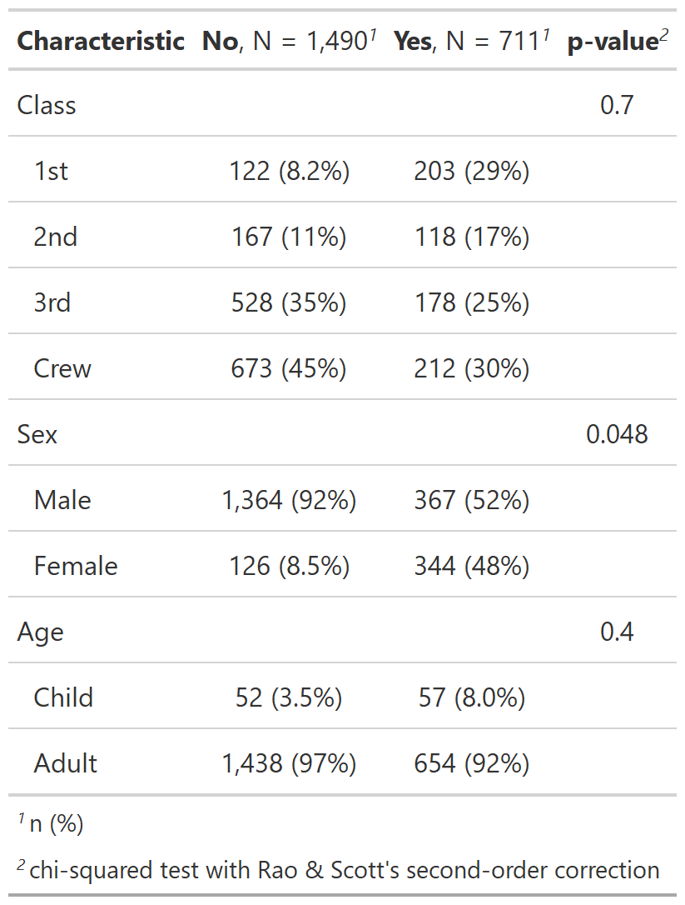

| add_p.tbl_svysummary {gtsummary} | R Documentation |
Adds p-values to tables created by tbl_svysummary by comparing values across groups.
## S3 method for class 'tbl_svysummary' add_p( x, test = NULL, pvalue_fun = NULL, include = everything(), test.args = NULL, ... )
x |
Object with class |
test |
List of formulas specifying statistical tests to perform,
e.g.
Tests default to |
pvalue_fun |
Function to round and format p-values.
Default is style_pvalue.
The function must have a numeric vector input (the numeric, exact p-value),
and return a string that is the rounded/formatted p-value (e.g.
|
include |
Variables to include in output. Input may be a vector of
quoted variable names, unquoted variable names, or tidyselect select helper
functions. Default is |
test.args |
List of formulas containing additional arguments to pass to
tests that accept arguments. For example, add an argument for all t-tests,
use |
... |
Not used |
A tbl_svysummary object
Example 1

Example 2
Example 3

Joseph Larmarange
Other tbl_svysummary tools:
add_n.tbl_summary(),
add_overall(),
add_q(),
add_stat_label(),
modify,
tbl_merge(),
tbl_stack(),
tbl_svysummary()
# Example 1 ----------------------------------
# A simple weighted dataset
add_p_svysummary_ex1 <-
survey::svydesign(~1, data = as.data.frame(Titanic), weights = ~Freq) %>%
tbl_svysummary(by = Survived) %>%
add_p()
# A dataset with a complex design
data(api, package = "survey")
d_clust <- survey::svydesign(id = ~dnum, weights = ~pw, data = apiclus1, fpc = ~fpc)
# Example 2 ----------------------------------
add_p_svysummary_ex2 <-
tbl_svysummary(d_clust, by = both, include = c(cname, api00, api99, both)) %>%
add_p()
# Example 3 ----------------------------------
# change tests to svy t-test and Wald test
add_p_svysummary_ex3 <-
tbl_svysummary(d_clust, by = both, include = c(cname, api00, api99, both)) %>%
add_p(
test = list(
all_continuous() ~ "svy.t.test",
all_categorical() ~ "svy.wald.test"
)
)